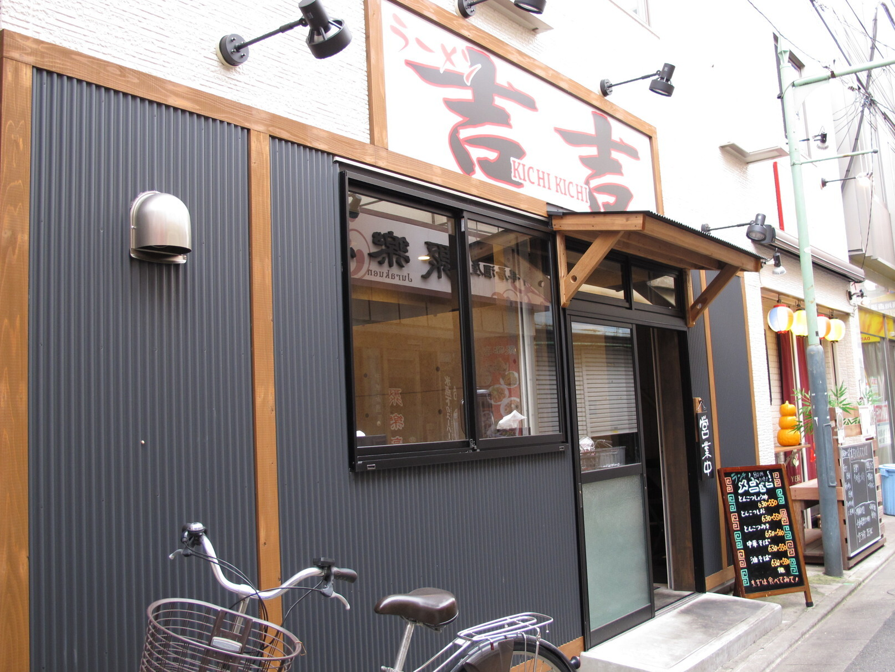
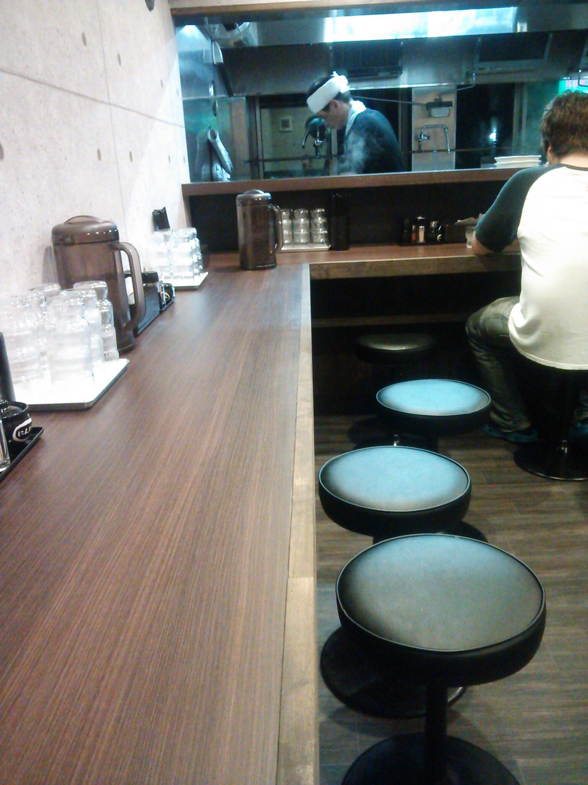
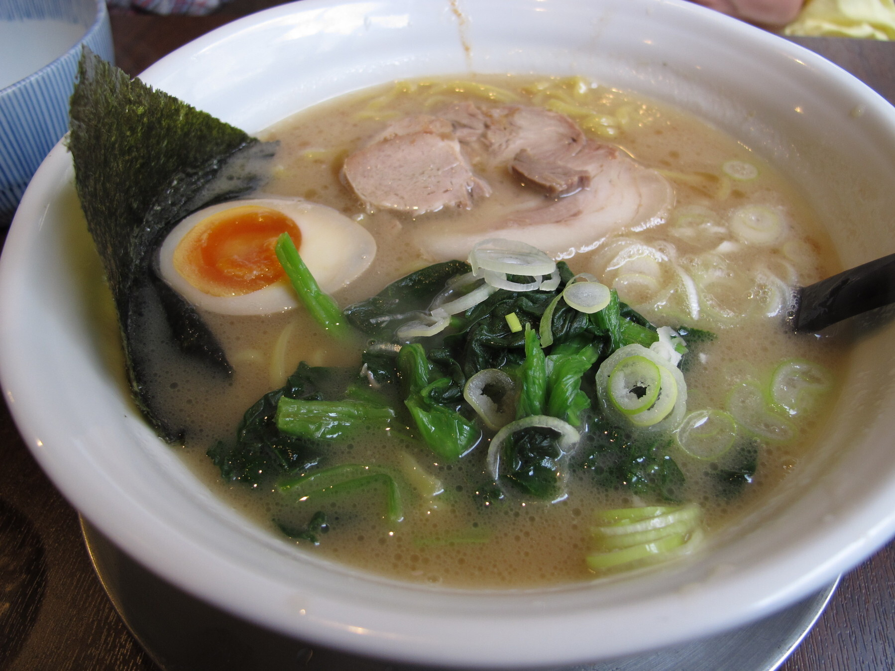

[東京 品川]
ラーメン吉吉 （ラーメンキチキチ）

おすすめのポイント
京急本線立会川駅から、歩いて１分ほどのところにあるお店です。
このお店は、発券式のラーメン屋です。
席は、L字のカウンターとテーブルがあり、カウンターがメインのお店となっているので、一人でも非常に入りやすいです。
口コミを見ると、ラーメン屋にも関わらず、女性でも一人で入りやすいという意見があるくらいです！

店員さんは、気遣いのある優しい人で、好印象です。
ラーメンは、豚骨系で、こってり、非常に食べ応えがあります。
ランチメニューなんかもあるので、是非訪れてみてください。

お店の情報
| 店名 | ラーメン吉吉 （ラーメンキチキチ） |
|---|---|
| 住所 | 東京都品川区東大井2-23-2 |
| アクセス | 京急本線立会川駅から76m |
| 電話 | 03-3762-0733 |
| 営業時間 | 11:00～15:00
17:00～翌0:30 |
| 定休日 | 日曜日
|
| 予算 |
ランチ 〜999円
ディナー 〜999円 |
| HP |
https://tabelog.com/tokyo/ A1315/A131501/13185750/ |